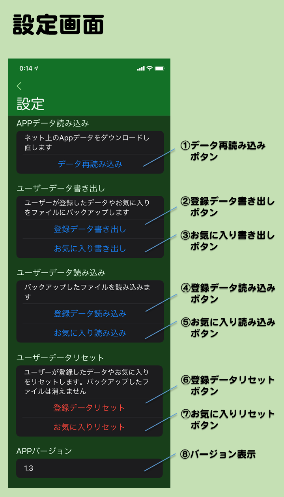

- 設定画面とは
- メイン画面などで画面下の歯車アイコンをタップして移動してくる画面です。データの保存や読み込みやリセットなどができます。
- 画面の説明
- ①データ再読み込みボタン
- Appデータをネットから再読み込みします。画像やデータが正しく読み込みできてないように見える時に押してください。
- ②登録データ書き出しボタン
- ユーザーが新規登録画面や編集画面で登録・編集したデータをファイルに書き出します。バックアップのために使えます。
iPhoneにプリインストールされているファイルAppでパンダ誕生日Appのフォルダを見るとある pandaBirthdayUserData_default.txt というファイルがこれです。
ファイルAppで他のiPadやiPhoneにコピーしてそこのパンダ誕生日Appに読み込みさせることができます。
- ③お気に入り書き出しボタン
- ユーザーが詳細情報画面でセットしたお気に入りの情報をファイルに書き出します。バックアップのために使えます。
ファイルAppでこのAppのフォルダを見るとある pandaBirthdayFavorites_default.txt という名前のファイルがこれです。
このファイルも登録データと同じようにファイルAppでコピーできます。
- ④登録データ読み込みボタン
- ②で書き出したユーザー登録データのファイルを読み込みます。
- ⑤お気に入り読み込みボタン
- ③で書き出したお気に入りデータのファイルを読み込みます。
お気に入りデータは④の登録データの読み込みの後に読み込まないと、登録データのお気に入りが反映されないので注意してください。
- ⑥登録データリセットボタン
- 登録したデータをリセットして全て削除します。②で書き出したファイルは消えません。
- ⑦お気に入りリセットボタン
- お気に入りをリセットして全て削除します。③で書き出したファイルは消えません。
- ⑧バージョン表示
- Appのバージョン番号を表示します。AppStore にある最新のバージョンと同じか確認できます。